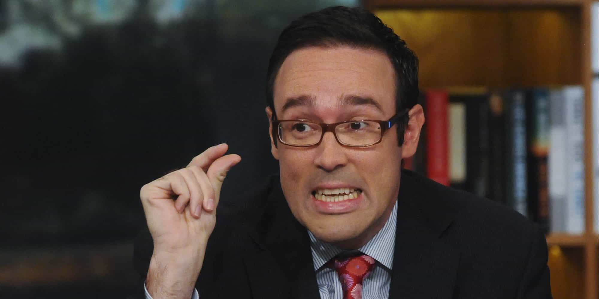
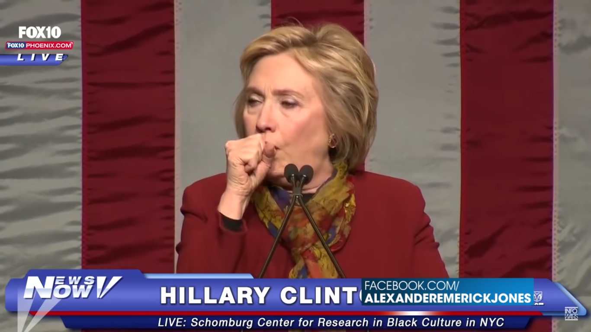
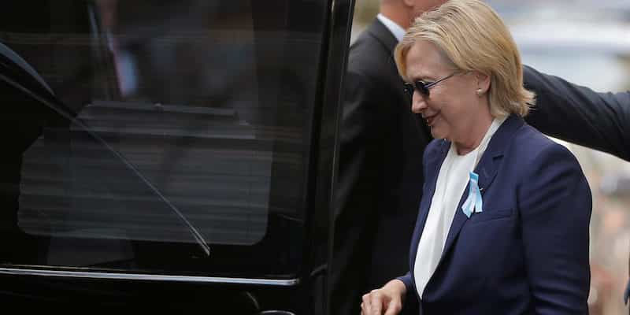

< < < Back
Media Reluctant To Question Hillary’s Health After Her Rag Doll Collapse At 9/11 Memorial – Return Of Kings
On Sunday, just outside a memorial to commemorate the 15th anniversary of the September 11 attacks, Hillary Clinton spectacularly collapsed. Having been resting on a pillar by the road, she began wobbling and bopping like a robot or someone experiencing a seizure. Her aides and others had to literally drag her into a van that had just pulled up along with the rest of her motorcade. In spite of them, the media could barely be bothered to report on it.
Secret Service members and other handlers appeared to be just as concerned with obscuring Hillary’s medical episode as they were about keeping her safe from any external harms. Moments before, a woman believed to be Dr. Lisa Bardack was checking her pulse, trailed by that familiar burly man with medical training and a Diazepam-style injection pen:
A view of Clinton being dragged into the van is shown here:
https://twitter.com/eliand3/status/775020512493928448
The preliminary excuse by campaign officials for Clinton’s exit in New York City was that she had felt “overheated” and needed to go to her daughter Chelsea’s apartment to recuperate. Nonetheless, temperatures were hovering around just 80 degrees Fahrenheit (the mid-20s Celsius) around the time she left and before that had only been in the 70s. Significant suspicions were also raised because it took her campaign some ninety minutes to even give an explanation as to what had happened. None of the press corps were seemingly allowed to know what had transpired before this, let alone permitted to follow her. If the incident was so minor, why the veil of secrecy? This is all in addition to Clinton’s refusal for nearly a year to hold an open press conference, as Donald Trump has many times.
In damage control, a statement by Clinton’s team revealed she had been diagnosed with pneumonia two days earlier. Her ailment had not been previously disclosed. Prior to the pneumonia concession, The Washington Post‘s Chris Cillizza, a noted, ad hominem attacker of those questioning Hillary’s physical capacity, finally admitted that her health was now a legitimate campaign issue. His mea culpa may not have been up there with someone petitioning Godfather Vito Corleone for assistance, but for a biased liberal reporter it was sensational. It has become increasingly difficult for the mainstream media to hide Clinton’s punished bodily condition.
The media dropped the ball and gave it to Team Clinton, again

Chris Cillizza won back this much credibility for conceding that Hillary’s health is now a reasonable campaign issue.
Wider and sufficiently responsive media coverage was completely lacking after very credible reports of Hillary Clinton’s illness emerged. Despite a Twitter user by the name of Zdenek Gazda quickly making a video of a sick Clinton leaving available and Fox News’ Rick Leventhal breaking the story, other journalists were sluggish.
Along with Fox, few other major media outlets bothered to cover the development at first, notwithstanding the ease with which Gazda’s video was disseminated on Twitter. Those large concerns that did publish were disproportionately British newspapers, such as The Express and The Independent.
Other mostly US networks and publications often accused of bias in favor of the Clinton campaign deliberately tried to play down or ignore the footage. CNN was by far the worst offender. Its below-lukewarm headlines were “Video shows Hillary Clinton leaving 9/11 event early” and “Hillary Clinton not feeling well, leaves 9/11 event early.” The second story in particular was originally much more threadbare and vague, before it was updated as Hillary’s medical episode became almost impossible to obfuscate. In essence the reports became an opportunity to regurgitate the Clinton campaign’s own talking points of her being “overheated” but now “feeling much better,” words which CNN and other major companies like CBS had waited diligently for before they put fingers to keyboards.
Meanwhile, those questioning Hillary’s health have been called “sexists” and even fired

Well-known conservative actor James Woods recently pointed out how Minnesota Senator Amy Klobuchar was admonishing those who questioned Hillary’s health as “sexists”:
A number of prominent leftist commentators, biased “journalists” and even celebrities, among them claimed comedian Sarah Silverman, have also come to the defence of Clinton in recent weeks, generally labeling the scrutiny of her health “conspiracy theories” and “gender-based harassment.” Silverman went so far as to call the doubters “assholes.” CNN’s Brian Stelter did not hold back either in rebuking them as supposed misogynists and on the same network Dr. Drew Pinsky had his show canceled outright after discussing his views on Hillary’s condition.

Simultaneously, a journalist for The Huffington Post, David Seaman, found himself fired last month and his articles deleted after he had the audacity to write about doubts regarding Hillary’s health, which seem to be vindicated after yesterday’s medical episode. In shock and fearing retribution from leftists, Seaman made it clear that he was not, among other things, suicidal. The mentioning of his non-suicidality is a reference to concerns that those who know or question too much about the Clintons, especially in the media, might be silenced or killed.
Hillary cannot be trusted

Is it a normal politician’s van, a black ambulance or a hearse? Who knows when it comes to Hillary’s health.
The significant delay in explaining her departure, the blanket restriction or exclusion of most journalists from being around her at the memorial, and the way she continues to hide and cover-up illnesses until incidents like this, regardless of whatever ailments she actually has, all indicate Hillary Clinton is unfit ethically, morally, politically, and now physically to hold office.
It speaks volumes about the serious worries centered on Clinton that I have not even spoken about her other scandals. From questions about her role in the deaths at Benghazi in Libya, the fourth anniversary of which was on September 11 as well, to her classified emails debacles and the foreign money, particularly from the Saudis and Gulf States, flowing into the coffers of the Clinton Foundation, Hillary represents the ultimate toxic candidate.
Read More: Dr. Drew’s Show On CNN Canceled After He Questions The Narrative On Hillary’s Health